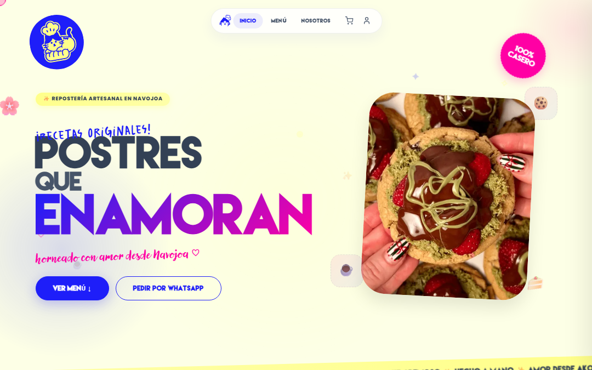
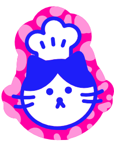

Akora Repostería


OrigenUna repostería de Navojoa
Commits267
EstadoEn producción
Tienda web y punto de venta: catálogo, carrito, pago en línea con Openpay (BBVA), panel administrativo y POS para tablet. Cobra de verdad. Las imágenes se construyen en GitHub Actions y el servidor solo las baja y las levanta, con respaldo de la base antes de cada despliegue.
Visitar akora.mx